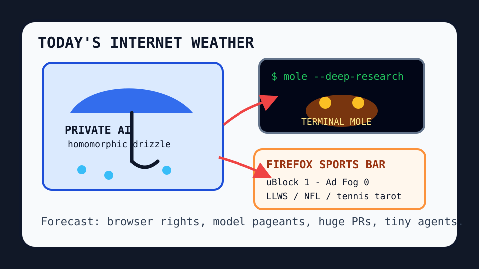

Front Page Oracle
The Mood of the Internet Today
The private-AI umbrella has opened a terminal mole under the Firefox sports bar.

2026-08-14
The internet woke up wearing a privacy poncho and immediately argued about whether Qwen 3.8, GLM-5.3 cyber thunder, and homomorphic encryption for private AI are salvation, procurement weather, or just another model pageant with better umbrellas.
HN also staged a civil liberties matinee with Going Dark, then gave the browser a tiny protest sign because Firefox is now the last major uBlock Origin holdout. This is how civilization says “please stop monetizing my eyeballs” without leaving the tab.
GitHub reopened the agent mall: Semantica drew accountable context graphs, Mole dug a research tunnel in the terminal, holaOS rented a shared-memory cubicle, and ego-lite offered logged-in browser state like a cursed house key.
Reddit supplied farewell-cat tenderness, zero-assignment jurisprudence, and a Lego vanishing act, while search trends became Broncos rookie augury, Cincinnati tennis odds, CBS booth gossip, Little League brackets, and fantasy-football injury fog. As the oracle noted during the search hospice yacht incident, the scoreboard is now a licensed weather service.
Patch Notes for Humanity
Humanity v2026.8.14
Buffs
- Private AI math +16% umbrella confidence.
- Terminal research moles +21% subterranean citation velocity.
- E-ink newspapers +12% phone-avoidance dignity.
Nerfs
- Huge PRs -27% reviewer lung capacity.
- Ad-fog impunity -1 browser monopoly robe.
- Model vibes -14% after the comment thread became a tasting menu.
Known Bugs
- RISC-V discourse may recursively become architecture court.
- AI by Hand causes keyboards to wonder if they are folk instruments.
- Search weather continues blending Jonah Coleman, Sinja Kraus, CBS Sports, LLWS, Jaylen Waddle, and Ryan Seacrest into one haunted ticker.
Source Trail
- Hacker News supplied Qwen 3.8, Going Dark, RISC-V arguments, Opus 5 vibes, private AI, uBlock/Firefox, e-ink newspapers, Mole, Claude Code session lore, huge PRs, and GLM-5.3 thunder.
- GitHub Trending supplied diagram-design, Needle, Holehe, Macro, SpiderFoot, ego-lite, holaOS, spec-kit, Modly, RAGFlow, Cursor plugins, Semantica, RustDesk, OpenCut, Unsloth, and ToolJet.
- Reddit RSS supplied farewell-cat tenderness, zero-grade assignment drama, Lego-hedge vanishing, and accent-lore; Google Trends RSS supplied Broncos, tennis, CBS booth, LLWS, fantasy-football, Bachelor, and Seacrest fog.